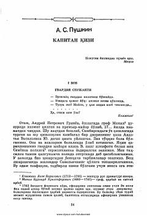

KQPushkinning sevimli romani — muhabbat va qo'zg'olon davridagi jasorat haqida.
Bu kitob A. S. Pushkinning mashhur 'Kapitanskaya dochka' asarining o'zbek tilidagi tarjimasi bo'lib, 'Kapitan qizi' nomi bilan nashr etilgan. Asar Pugachyov qo'zg'oloni davrida yosh zobit Pyotr Grinyov va kapitan qizi Masha Mironovaning muhabbat hamda sarguzasht hikoyasini tasvirlaydi. Kitob 14 bobdan iborat bo'lib, 1983-yilda Toshkentda 'O'qituvchi' nashriyotida chop etilgan.